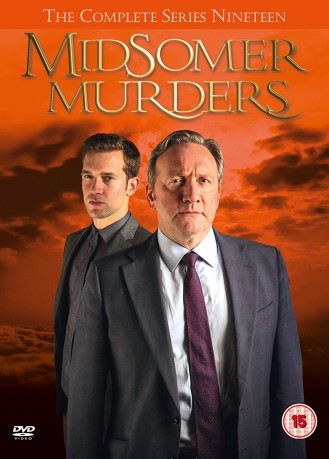

")
Alternativ: Midsomer Murders
 
 IMDB-Wertung: 7.8 / 10
IMDB-Wertung: 7.8 / 10  Metascore:
Metascore: 
Die Krimi-Reihe basiert auf den preisgekrönten Romanen der britischen Autorin Caroline Graham und verbindet Spannung und Humor auf charmant-skurrile Weise. Inspector Barnaby (John Nettles) und sein gewissenhafter Kollege Sergeant Troy (Daniel Casey) gehen unermüdlich brutalen Verbrechen nach, die die friedvolle Grafschaft Midsomer mit ihren exzentrischen Bewohnern immer wieder erschüttern.
Jahr: 1997
Dauer: 101 Minuten
FSK: 12
Land: England Studio: ZDFTonspuren: DD5.1 - ,
Untertitel:
Auflösung: 720p (1280x720) Größe: 3000 MB
Genre: Drama, Krimi, Mystery, TV-Serie
Regisseur: Renny Rye, Peter Smith, Richard Holthouse, Sarah Hellings, Jeremy Silberston, Nicholas Laughland, Alex Pillai, Matt Carter, David Tucker, Baz Taylor, Moira Armstrong, Simon Langton, Peter Cregeen, Andy Hay, Luke Watson, Charlie Palmer, Rob Evans, Steve Hughes, Toby Frow, Paul Harrison
Drehbuch: Christian Bayer
Soundtrack:
Darsteller:
 Susan Fordham als CID Officer / ... 19 episodes, 2012-2018
Susan Fordham als CID Officer / ... 19 episodes, 2012-2018 Nick Hendrix als DS Jamie Winter 12 episodes, 2016-2018
Nick Hendrix als DS Jamie Winter 12 episodes, 2016-2018 Jo Wheatley als Villager / ... 10 episodes, 2016-2018
Jo Wheatley als Villager / ... 10 episodes, 2016-2018 Michael Haydon als Police Officer / ... 9 episodes, 2015-2018
Michael Haydon als Police Officer / ... 9 episodes, 2015-2018 Glenn Webster als Police Officer / ... 9 episodes, 2016-2018
Glenn Webster als Police Officer / ... 9 episodes, 2016-2018 Annette Badland als Dr. Fleur Perkins 6 episodes, 2018
Annette Badland als Dr. Fleur Perkins 6 episodes, 2018 Sam Hazeldine als Simon Dixon 4 episodes, 2007-2008
Sam Hazeldine als Simon Dixon 4 episodes, 2007-2008 Toby Jones als Dan Peterson 4 episodes, 1999-2000
Toby Jones als Dan Peterson 4 episodes, 1999-2000 Gioacchino Jim Cuffaro als Book Club Guest / ... 4 episodes, 2013-2018
Gioacchino Jim Cuffaro als Book Club Guest / ... 4 episodes, 2013-2018 David Bamber als Anthony Prideaux / ... 3 episodes, 2006-2016
David Bamber als Anthony Prideaux / ... 3 episodes, 2006-2016 Samantha Bond als Arabella Hammond / ... 3 episodes, 2001-2011
Samantha Bond als Arabella Hammond / ... 3 episodes, 2001-2011 Malcolm Sinclair als Alan Bradford / ... 3 episodes, 2000-2016
Malcolm Sinclair als Alan Bradford / ... 3 episodes, 2000-2016 Adrian Scarborough als Eddie Carfax / ... 3 episodes, 2002-2016
Adrian Scarborough als Eddie Carfax / ... 3 episodes, 2002-2016 Richard Cordery als Atticus Bradley / ... 3 episodes, 2004-2014
Richard Cordery als Atticus Bradley / ... 3 episodes, 2004-2014 Clare Higgins als 'Medea' read by / ... 3 episodes, 2005-2008
Clare Higgins als 'Medea' read by / ... 3 episodes, 2005-2008 Rupert Vansittart als Alistair Kingslake / ... 3 episodes, 2002-2009
Rupert Vansittart als Alistair Kingslake / ... 3 episodes, 2002-2009 Miles Richardson als Dr. Giles Danby / ... 3 episodes, 2001-2011
Miles Richardson als Dr. Giles Danby / ... 3 episodes, 2001-2011 Eileen Davies als Olive Beauvoisin / ... 3 episodes, 1999-2005
Eileen Davies als Olive Beauvoisin / ... 3 episodes, 1999-2005 Timothy Bateson als James Jocelyne / ... 3 episodes, 1998-2005
Timothy Bateson als James Jocelyne / ... 3 episodes, 1998-2005 Atul Sharma als Circus Attendee / ... 3 episodes, 2015-2018
Atul Sharma als Circus Attendee / ... 3 episodes, 2015-2018 Daniel Eghan als Dr. Good / ... 3 episodes, 2017-2018
Daniel Eghan als Dr. Good / ... 3 episodes, 2017-2018 Kevin McNally als Gerald Farquaharson / ... 2 episodes, 1999-2010
Kevin McNally als Gerald Farquaharson / ... 2 episodes, 1999-2010 Richard Hope als Gordon Brierly / ... 2 episodes, 2000-2007
Richard Hope als Gordon Brierly / ... 2 episodes, 2000-2007 Rosie Cavaliero als Denise Fielding / ... 2 episodes, 2002-2015
Rosie Cavaliero als Denise Fielding / ... 2 episodes, 2002-2015 Beth Goddard als Selina Stanton / ... 2 episodes, 2003-2011
Beth Goddard als Selina Stanton / ... 2 episodes, 2003-2011 Harriet Walter als Diana Davenport / ... 2 episodes, 2005-2013
Harriet Walter als Diana Davenport / ... 2 episodes, 2005-2013Datei: X:\HD-Serien\Inspector Barnaby\S01\Inspector Barnaby S01E00 Pilot - Tod in Badgers Drift seit 20.12.2017
Festplatte: HD Serien(I-ST)
 Es gibt insgesamt 182 Filme in der Gruppe 'HD-Serien'
Es gibt insgesamt 182 Filme in der Gruppe 'HD-Serien'